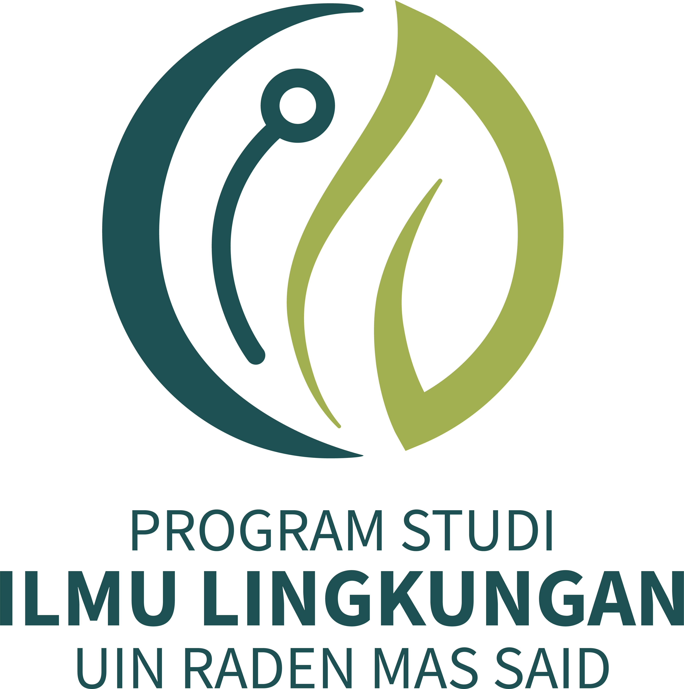
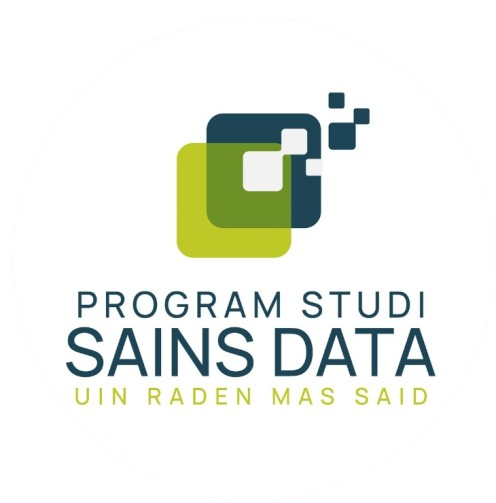
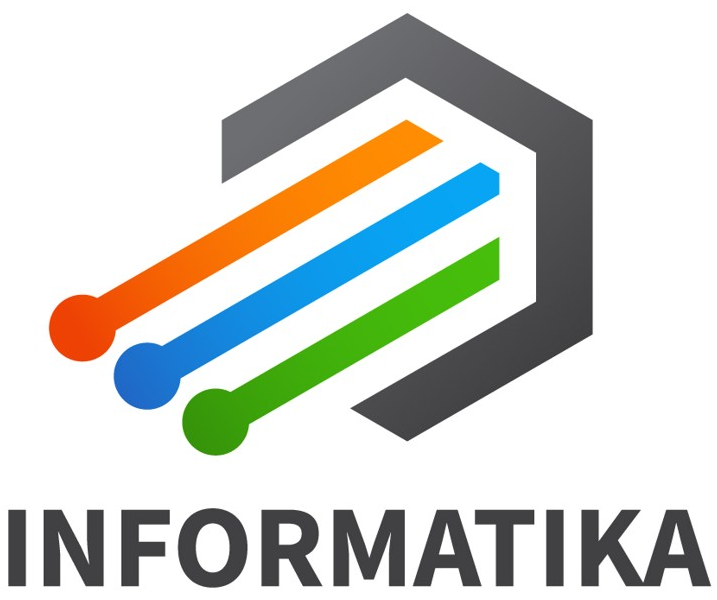

Kerja Praktek (KP) Fakultas Sains dan Teknologi, UIN Raden Mas Said Surakarta adalah kegiatan akademik berbasis praktik kerja lapangan yang bertujuan menghubungkan pengetahuan teoritis mahasiswa dengan pengalaman nyata di dunia kerja profesional sesuai bidang keilmuannya.
Fakultas Sains dan Teknologi

Kerja Praktek fokus pada mitigasi perubahan iklim, jasa lingkungan, AMDAL, rekayasa lingkungan, dan pengelolaan SDA.
Kerja Praktek fokus pada produksi, pengujian mutu, keamanan pangan, serta riset pengembangan pangan di industri halal
Kerja Praktek fokus pada pengembangan di laboratorium riset,industri bioteknologi dan/atau di lembaga kesehatan.

Kerja Praktek fokus pada analisis data, machine learning, dashboard visualisasi data dan pengambilan keputusan.

Kerja Praktek fokus pada pengembangan perangkat lunak, multimedia, dan implementasi AI di berbagai bidang.
Tahapan kegiatan Kerja Praktek
Mahasiswa melakukan registrasi dan upload dokumen.
Admin memeriksa data dan kelengkapan berkas.
Mahasiswa melaksanakan kegiatan KP di instansi terkait.
Seminar laporan dan ujian akhir pelaksanaan KP.
{kind=link}